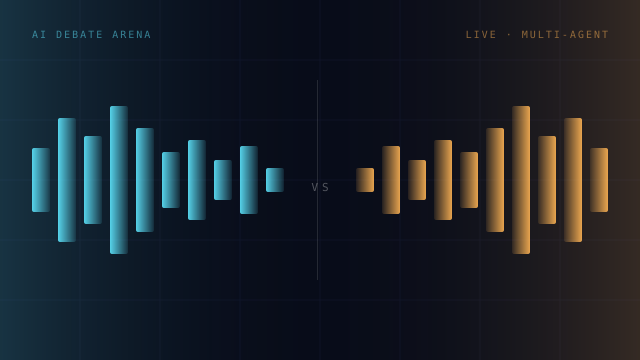
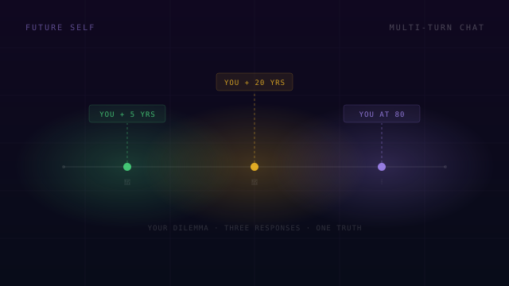

03 / EXPERIMENTS
Things I built
because I wondered.

AI Debate Arena
I kept wondering: what happens when two AIs argue? So I built the arena. Two AI personas clash on any topic in real-time over SSE streams. The crowd votes. The results are stored. It reveals a lot about how language models reason under pressure.

Future Self
Built for myself, honestly. When I'm stuck on a hard decision, I want perspective — not advice from someone my age, but from the versions of me that have already lived through it. Describe your dilemma. Three future yous respond simultaneously — at +5, +20 years, and at 80. Then you talk to each one.

Sentiment Analysis × Metaheuristics
A deep learning research project — BiLSTM + Conv1D + Attention trained on 2M+ samples, hyperparameters evolved with Genetic Algorithm and Grey Wolf Optimization. Hit 95% on Amazon Food Reviews, 85% on Sentiment140.

Human Activity Recognition
A systematic benchmark of VGG, ResNet, GoogLeNet, DenseNet, and MobileNetV2 on 12,000+ images across 15 activity classes — consistent transfer learning and augmentation across all architectures. Learned more from the gaps than the results.

Heart Disease Prediction
One of my earliest ML projects — and still one of the most grounding ones. Clinical features: age, BP, cholesterol, ECG. Full EDA, logistic regression, evaluated on precision, recall, F1, ROC-AUC. Medicine taught me to care about false negatives.
READY TO COLLABORATE?
Let's connect ↗